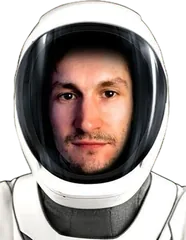

LAUNCH CONTROL · SINCE 2020
Six launches.
All still in orbit.
Games and tools for iPhone, Apple Watch and Android, built by Andrei Achziger.
LAUNCH LOG6 / 6 LIVE
Skaty Watch

Services
Mobile App Development
Native iOS in Swift/SwiftUI or cross-platform with React Native and Flutter. From initial concept through App Store submission — including WatchKit, CoreBluetooth, and hardware integrations.
AI Integration
Embedding AI into your product — on-device with CoreML/Vision, in the cloud with LLM APIs, or custom computer vision models. Proven experience fine-tuning and deploying real-time ML pipelines.
Web & Frontend
Modern, responsive web apps with Angular, TypeScript, and Node.js. Clean UI/UX grounded in Figma, with a keen eye on performance and accessibility.
Cloud & DevOps
Containerised, scalable infrastructure on GCP or Azure. Kubernetes orchestration, Docker pipelines, and GitLab CI/CD — building systems that are reliable and easy to maintain.
Hardware & Connectivity
NFC and Bluetooth LE integrations, IoT sensor systems, and industrial hardware interfaces. Experience connecting the physical world to apps — from medical devices to factory floors.
Tech Consulting
Interdisciplinary background in Cognitive Science, AI, and engineering — great for architecture reviews, stack decisions, MVP scoping, code quality, and turning complex ideas into working prototypes fast.
Tools
- iOS & Apple platforms
- Swift, SwiftUI, UIKit, WatchKit, CoreML, ARKit, CoreBluetooth, SpriteKit, CoreMotion, AVFoundation, StoreKit, Objective-C
- Mobile & cross-platform
- React Native, Flutter, .NET MAUI, Xamarin, Ionic, Cordova, Dart, C#
- Web & backend
- TypeScript, JavaScript, Angular, Node.js, HTML / CSS, REST APIs, Firebase
- Cloud & DevOps
- Kubernetes, Docker, GCP, Microsoft Azure, GitLab CI, GitHub, Git
- Connectivity & hardware
- NFC, Bluetooth LE, Multipeer Connectivity, IoT, Tinkerforge, Game Center
- AI & machine learning
- CoreML, Vision Framework, LLM APIs, Prompt Engineering, Computer Vision, Python, Firebase ML
- Game development & 3D
- Unity, Blender, C#, SpriteKit, ARKit, SceneKit, Aseprite
- Design
- Figma, Adobe Ps / Ai / Ae, Sketch, AutoCAD
Crew

I'm Andrei Achziger, a software engineer with a B.Sc. in Cognitive Science, based in Germany. I build my own apps and help teams ship theirs.
Contact
Questions about one of my apps, need support, or have a project in mind? Write to me.
Privacy Policy
Apps provided by Andrei Achziger are intended for use as is. This page informs visitors about my policies regarding the collection, use, and disclosure of personal information. If you choose to use my services, your personal information will not be stored, distributed, or analyzed by me.
Andrei Achziger does not take responsibility for data processed by third-party platforms such as Google, as I have no access to or insight into their data collection and processing practices. Any data collection via those platforms is primarily used to serve relevant ads.
My apps are suitable for children. Since my apps collect no personal information at all, no data from children or any other users is collected, stored, or shared. Game progress and settings (such as high scores) are saved only locally on your device and are removed when the app is uninstalled.
Health data: Fishy Watch can read your heart rate to power in-game features such as the fish tank experience. All heart rate measurements are processed exclusively on your device and never leave it — they are not stored permanently, transmitted, or shared with me or any third party.
MergeKey has its own, more detailed policy: MergeKey privacy policy.
This policy may be updated when necessary — please check this page periodically for changes. Updates take effect immediately upon posting. — Andrei Achziger